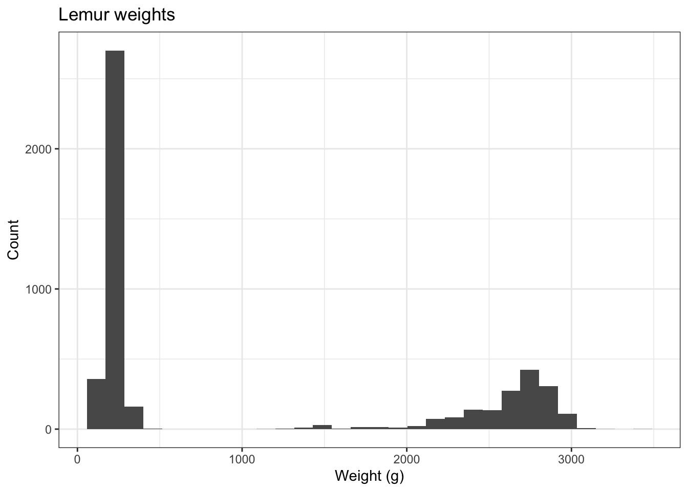

Lab 2: computational masonry
Due Monday February 6 at 5:00pm
By the end of the lab, you will…
- build the bare bones of a probabilistic graphical model using OOP
- reshape and extract insights from data
- write a function to sample from an admixture distribution
Getting started
If you did not complete lab 0, then go back and do so to set up your SSH key, git, and find instructions on how to clone a project.
Next in the terminal tab, type
cd ~to navigate to your home directory. Nextgit clone git@github.com:sta323-sp23/lab-2-username.gitwhereusernameis replaced with your username (this is the copied SSH URL from your lab-2 GitHub repo).Navigate to your
lab-2folder and open the.Rprojfile.Open the Quarto (
.qmd) file, change the author name to your name.
Exercises
For all exercises, you should respond in the space provided in the template lab-2.qmd and show all your work. In all answers of type double, three significant figures suffices.
1. Mixture densities
Sometimes called an “admixture density”, a mixture density is a convex combination (i.e. a weighted sum, with non-negative weights that sum to 1) of other density functions. The general form is
\[ f(x) = \sum_{i = 1}^n w_i p_i(x) \] where \(p_i(x)\) are density functions and \(w_i\) are weights such that \(w_i \geq 0\) and \(\sum_i w_i = 1\). To sample from \(f(x)\), one can simply sample from \(p_i(x)\) with probability \(w_i\).
Mixture densities are often used to model distinct subpopulations within a population.
For example, different species of lemurs have very different weights. Even when controlling for sex, age and pregnancy status of the lemurs, the distribution of weights across species still looks bimodal. In the plot below, approximately \(\frac{1}{3}\) of lemurs weigh less than 500 grams, and approximately \(\frac{2}{3}\) of all lemurs weigh more than 1000 grams.
- Write a function called
rNormalMixture1that takes takes argumentsw1,w2,mu1,mu2,sd1,sd2and returns a single sample from a mixture of two Gaussians. Test your function on the following cases
#case i
rNormalMixture1(w1 = 1/3,
w2 = 2/3,
mu1 = 300,
mu2 = 2750,
sd1 = 10,
sd2 = 100)
# case ii
rNormalMixture1(w1 = 0.6,
w2 = 0.5,
mu1 = 1,
mu2 = 3,
sd1 = 1,
sd2 = 0.5)
# case iii
rNormalMixture1(w1 = -0.6,
w2 = 1.6,
mu1 = 1,
mu2 = 3,
sd1 = 1,
sd2 = 0.5)
Hint
Check that the arguments are numeric and that the weights obey the rules outlined above.
- Write another function called
rNormalMixture2that takes argumentn,w1,w2,mu1,mu2,sd1,sd2and returns \(n\) samples from your mixture of two Gaussians by callingrNormalMixture1()\(n\) times.
Test your function on the following case and then print out the first 10 entries of \(x\) to the screen.
# case iv
x = rNormalMixture2(n = 10000,
w1 = 1/3,
w2 = 2/3,
mu1 = 300,
mu2 = 2750,
sd1 = 10,
sd2 = 100)
x[1:10]- Use
UnivarMixingDistributionwithin thedistrpackage to replicate case (iv) above. You might need to install the package in the console withinstall.packages("distr"). Read the help file onUnivarMixingDistributionfor an example of how to create a univariate mixing distribution. Call your distributionmyNormalMixtureand then use the code below to test it out.
rmyNormalMixture = r(myNormalMixture)
rMyNormalMixture(n = 10000)- Time (see
system.time({})from lab 0) how longrNormalMixture2takes vs how longrMyNormalMixturetakes to generaten = 10000samples and report your findings.
2. Skeleton of a graphical model

We might use the image above to visualize the conditional dependencies between random variables. For example,
\[ p(y_2 |y_1) = N(y_1, \sigma_2^2). \]
In words, \(y_2\) is normally distributed with mean \(y_1\) and variance \(\sigma_2^2\).
Within this context, we say \(y_1\) is a parent node to \(y_2\), or \(y_2\) is a child node of \(y_1\).
- Create an object
y1that has classnodeand is a list with the following entries:id= “y1”,children= “y2”,parent= NULL,mean= 0sd= 1
Print y1 to the screen.
- Next create a function
makeNodethat takes argumentsid,children,parent,mean, andsdand returns an object of classnode.idshould be of type character. Your function should check that the arguments are of appropriate type. Make the default argument forparentandchildrenbeNULLto represent nodes at the boundaries of your graph. Give a warning if the user tries to create an isolated node (a node with no parent/child nodes). Test your function on the cases below
# case i
makeNode(id = "y2", children = NULL,
parent = "y1", mean = y1$mean,
sd = 2)
# case ii
makdeNode(id = 0, children = "y3",
parent = "y1", mean = y1$mean,
sd = 2)
# case iii
makdeNode(id = "y3", mean = y1$mean,
sd = 2)- Write a vectorized function
getParentthat takes a list of classnodeand returns the names of each node’s parents. It should return “No parent” in the case of no parent. Test your function on the code below
y1 = makeNode(id = "y1", children = "y2",
parent = NULL, mean = 0,
sd = 1)
y2 = makeNode(id = "y2", children = NULL,
parent = "y1", mean = y1$mean,
sd = 2)
getParent(list(y1, y2))
Hint
- The length of
NULLis 0. - Use
[[]]to access the object in the list.
3. Lego Sales Data
Data
For this task you will be working with a synthetic data set of sales records for Lego construction sets. We will assume that the original data was stored in a JSON format but a colleague has managed to import it into R as a list of lists (of lists). The code below will load a copy of the object, called sales, into your environment.
sales = readRDS("data/lego_sales.rds")The data is structured such that each entry in the top list represents a different purchaser. These list entries contain basic information about the purchaser (name, age, phone number, etc.) as well as their purchase history. Everyone in the data set has purchased at least one lego set but some many have made multiple purchases. The purchase histories are stored in the purchases element which is also a list of lists. Each entry within the purchases list reflects a different Lego set which the customer purchased. Note that the customer may have purchased more than one copy of any particular set, this number is stored as Quantity within the purchase record.
Part 1 - Tidy the data
Your job here is to covert the sales object into a tidy data frame. Tidy in this case means each row should represents a separate purchase of a lego set by an individual and the columns should correspond to the keys in the JSON data. Duplicate columns should be avoided as much as possible and no data should be lost / ignored in your conversion.
Several guidelines / hints:
Be careful about making assumptions about the data - it is not as messy as real world data, but it is also not pristine and you are meant to run into several hiccups along the way.
Pay attention to types - the data frame you create should have columns that are of a type that matches the original data.
Don’t worry about duplicated data - since a customer can purchase multiple Lego sets that customer’s information may show up in multiple rows. This is fine and expected given the structure of the data. For the CS types: first normal form is ok in this case regardless of whatever your Databases professor may have told you.
Dealing with duplicate purchases - some customers purchased more than one copy of a particular lego set, for these individuals you can choose to code the purchase as multiple rows within the data frame or as a single row that also includes the quantity value. Either approach is fine, but your write up should discuss your choice.
Avoid hard coding features of the data into your solutions (e.g. column names for your data frame should be determined at runtime as much as possible).
Do not use magic numbers, always use column names whenever possible, similarly don’t assume a specific size for the data (e.g. number of columns or rows) - all of these should be determined at run time.
More generally, assume that the specific data could be changed at any time, and a new but identically structured data set could be provided. Make as few assumptions as possible about the data (some will be necessary, but should be stated explicitly in your write up).
You may assume that purchasers are uniquely identified by the first name, last name, and phone number.
When answering questions, in the case of a tie - all equivalent rows should be returned.
Part 2 - Questions
This task will involve answering a number of questions about that data that will involve manipulating and summarizing the data frame you created in part 1. You are also welcome to use the original sales object if you believe that approach is more efficient for any particular question.
No write up is needed for these questions as long as you include reasonably well documented code (using comments). Make sure that your code outputs your answer and only your answer.
What are the three most common first names of purchasers?
Which Lego theme has made the most money for Lego?
Do men or women buy more Lego sets (per person) on average?
What are the five most popular hobbies of Lego purchasers?
Which area code has spent the most money on Legos? (In the US the area code is the first 3 digits of a phone number)
Style guidelines
All assignments in this course must employ proper coding style, as outlined below:
All code should obey the 80 character limit per line (i.e. no code should run off the page when rendering or require scrolling). To enable a vertical line in the RStudio IDE that helps guide this, see the style guidelines from lab 0 or ask a member of the teaching team for help.
All commas should be followed by a space.
All binary operators should be surrounded by space. For example
x + yis appropriate.x+yis not.All pipes
%>%or|>as well as ggplot layers+should be followed by a new line.You should be consistent with stylistic choices, e.g. only use 1 of
=vs<-and%>%vs|>Your name should be at the top (in the YAML) of each document under “author:”
All code chunks should be named (with names that don’t have spaces, e.g.
ex-1,ex-2etc.)File names in your GitHub repo such as
lab-x.qmdmust not be changed and left as provided. Additionally, your repo must pass certain basic checks. The results of these checks are visible on GitHub via the badges at the top of your README and the actions tab. These are meant to give you feedback around the structure and reproducibility of your repository and assignment - they do not assess the correctness of your work. You should consider them a necessary but not sufficient condition when turning in your work - passing all of the checks simply means your have met a minimum standard of reproducibility for the assignment.
Fundamentally, the check is making sure 1) you only have the files you should in your repository, 2) your .qmd renders.
If you have any questions about style, please ask a member of the teaching team.
Submitting your lab
To submit your assignment, simply commit and push your completed lab-x.qmd to your GitHub repo. Your most recent commit 48 hours after the assignment deadline will be graded, and any applicable late penalty will be applied (see the syllabus). For this reason, do not push commits after you are satisfied with your work, or a late penalty will be applied.